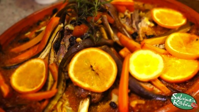

- RECIPES
- EPISODE GUIDE
MORE FROM THE SHOW

MOROCCAN LAMB TAJINE
Here's how to make the dish
- Start with a lamb leg or rib slab on baking dish place slab of lamb
- Make small cuts near bone area especially and stuff with peeled garlic cloves
- Mix half a cup soy sauce, red wine, yogurt, a fourth cup honey, and a teaspoon each of McCormick cinnamon, cumin, paprika and turmeric
- Sprinkle all over lamb
- In separate bowl place a cup of couscous in warm water. Let stand.
- Then in a hot pan.. sauté, a palm full of raisins, dried fruits(apricots,apples ,cranberries etc) and cashews
- Mix in the couscous now already absorbed in liquid.. add a cup of tomato sauce
- When all are mixed in, layer over a large baking dish or pan
- Place lamb on top of couscous, pouring all the yummy juices and spices over lamb
- Place strips of cut carrots ,eggplant and cabbage on top of lamb
- Add a spirnkle of olive oil, yoghurt,drizzle of honey and yoghurt on top
- Sprinkle with remaining raisins and nuts
- Slice an orange skin and all and garnish over lamb with some rosemarie
- Squeeze half a cup of pineapple over entire lamb for guaranteed soft meat!
- Cover in foil and cook in pre heated oven for 1 hour and 45 minutes
Enjoy!!!! ( :
From my kitchen to yours with love, Mwahhh! -S
Ingredients:
- lamb leg or rib slab
- olive oil
- garlic cloves
- soy sauce
- honey
- teaspoon of McCormick cinnamon
- teaspoon of McCormick cumin
- teaspoon of McCormick paprika
- teaspoon of McCormick turmeric
- rosemarie
- red wine
- yogurt
- raisins
- dried fruits(apricots,apples ,cranberries etc)
- cashews
- carrots
- eggplant
- cabbage
- pineapple
- orange skin